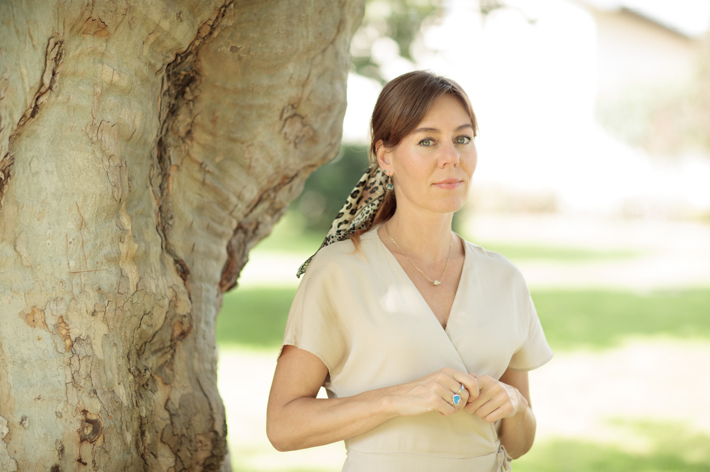

About me
Helping people understand themselves — and live the life they love.

I am a licensed psychologist, counselor, and holistic wellbeing practitioner with a degree in Psychology and Neuroscience from London University, and years of experience helping people better understand themselves and live the life they love.
Many of us carry unconscious limiting beliefs — about success, love, or self-worth — that shape the way we feel, our decisions, and our relationships. I can help you rewire those outdated beliefs, shift your perspective, and build the confidence to create the life you truly want.
I help people understand and transform their thoughts, emotions, and behaviors in a way that feels natural and empowering. My approach is science-based yet deeply human. I integrate neuroscience, psychology, and holistic methods to help you recognize that true well-being comes from aligning the mind, body, and emotions.
Whether you're facing stress, self-doubt, relationship issues, life transitions, or simply seeking more meaning and joy, I create a space where you can explore, heal, and grow at your own pace.
Every person is unique, and so is their path to well-being. Together, we uncover what's holding you back, challenge limiting beliefs, and help you step into a more confident, fulfilled, and authentic version of yourself.
My story
My Journey to Personal Transformation

Every transformation starts with a story, and mine is one of breaking free from patterns that held me back. Let me share a bit of my personal journey with you — one that has shaped the way I help others today. There was a time when I felt stuck in a loop of repeating the same painful patterns and weighed down by past experiences. I often blamed my circumstances, feeling powerless and disconnected. I didn't realize I was worthy — worthy of a meaningful, happy life, of being truly seen, heard, and understood.
Everything changed when I made a life-changing decision: I chose to take ownership of my life. I realized that true healing begins from within. It wasn't easy — I had to go deep, confronting the parts of myself I had feared and ignored for so long. I had to confront old beliefs and reprogram the invisible rules that were holding me back. But through this challenging process, I discovered a strength I never knew I had, and I began to rewrite my story.
The study of psychology and personal development became a powerful journey for me. The deeper I went into understanding myself, the more profound the rewards. I stopped repeating the past. Every step brought me closer to living fully in the present and looking forward to a positive future. This transformation taught me that healing isn't just about mending the past — it's about embracing growth and discovering who you truly are.
Now, I'm passionate about empowering others on their transformative journeys. I'm deeply committed to understanding myself, because through that, I understand you. My approach is deeply personal and customized for each individual, focusing on helping them realize their unique strengths and capabilities.
Let's begin together
Not everybody needs a therapy, but everyone deserves a space where they can be themselves.
Book a session